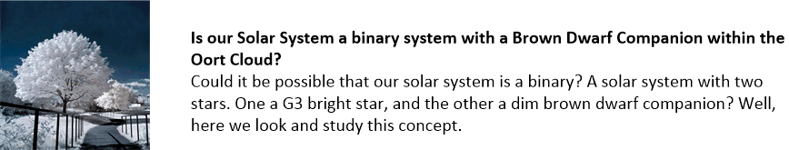

How about that for a title? Yah, it’s probably going to get exactly zero hits on Google, don’t you know. But after all, everyone just “knows” what the universe is, and what our role in it is, right? We all know.
Or do we?
Is all we see, all that there is? Is all the rumors about UFO’s, little green men, and strange being that walk in and out of our reality just some kind of Hollywood fiction? Is the idea that we can buy our way into “forgiveness” and “Heaven” possible if we donate enough money to charity and large churches? Is wealth the sole method to determine whether or not you lead a successful life?
What is real, and what is not?
What is important, and what is trivial?
What is actual, and what is a lie?
Here we are going to discuss what our reality actually is. And while I have (in other posts) discussed the nature of our universe, and the nature of our reality, here is where “I bring it home” and discuss it on a very up-front and personal way.
"Bringing It Home" "Bringing it home" is making something more clear by seeing the situation more closely. Example: "Taking care of my grandfather is really bringing home the importance of good health care." When one thing happens which shows you that some thing is real, that "brings it home". -GoEnglish.com Idioms
Quick Overview
The universe doesn’t look like anything that we are taught in school or in our religions. It does not at all resemble our physical reality. It is something quite different. So to enter this discussion you all need to be made aware of that.
Our universe is actually something else.
And because we don’t have the proper vocabulary to describe it, we will overuse some terms with will tend to add confusion. That is something that we do not want.
Definition of universe 1 : the whole body of things and phenomena observed or postulated : cosmos: such as a : a systematic whole held to arise by and persist through the direct intervention of divine power b : the world of human experience c (1) : the entire celestial cosmos (2) : milky way galaxy (3) : an aggregate of stars comparable to the Milky Way galaxy 2 : a distinct field or province of thought or reality that forms a closed system or self-inclusive and independent organization 3 : population sense 4 4 : a set that contains all elements relevant to a particular discussion or problem 5 : a great number or quantity
Phew!
First off, we all exist within a time-less void.
Within this void, are multiple universes. There are a large number of them. Maybe infinite. Who actually knows?
We, our consciousness, come from one of these universes.
We have a name for it. We call it “Heaven”.
But what about us?
Sure there is a Heaven. It is a “place”. But what about us?
Our consciousness is part of a group of quanta that we call a soul.
And thus, yes, souls reside within Heaven. And they create these objects known as “consciousness”.
And you, who are reading this, are one such being; one such consciousness.
Is there anything that is too difficult to understand? It should be pretty clear. Most religions pretty much maintain this belief structure, more or less. Of course, they don’t refer to a consciousness as being a part of soul. Or that you are a being of consciousness. But aside from that, that’s the basics of the void that we call “the universe”.
Now, as you all might be aware, you and I are not dwelling within Heaven. We are somewhere else. If we were inside of Heaven things would be quite different. Indeed, and you all can well imagine what the differences would be.
Instead, we are conscious that dwells somewhere else. Not in Heaven. Somewhere else.
We call this other place “reality”.
It is our reality. And that is where our consciousness dwells while our bodies are alive and functioning. And when we die, our consciousness leaves our reality and returns to Heaven.
Again, this shouldn’t be too difficult to understand either. Most religions have some idea or concept of this. We live on the Earth, and then we die and return to Heaven. Many religions refer to this as soul, but that is not completely accurate.
Soul stays within Heaven. It is the universe that the soul occupies. It never leaves that universe.
Instead it creates a “vehicle”, known as consciousness, which it uses to acquire experiences with. These experiences are like a giant vacuum cleaner, and it collects all sorts of new, interesting, and curious experiences with it. These experiences are when quanta interact together, and in that interaction they create associations. These associations become building blocks. And those building blocks are what the soul uses to grow.
Phew!
But where does consciousness go to collect those experiences?
It enters another universe.
This other universe is called “reality”.
This is a slightly different version than what most religions teach. The Buddhists believe that suffering is the path to enlightenment, and I suppose that you could say that suffering is a sub-set of experiences. The Christian religions teach that we are born corrupted and that we must cleanse ourselves though pious actions in order to qualify to return to Heaven. Again, not so different. Our actions, and the experiences associated with them, observe the needs that the consciousness has to build up quantum relationships for soul.
All this I pretty much covered in other posts, describing the “shaft or cylinder of light” that the consciousness passes through to get to Heaven and all that.
But now we are going to diverge a little away from what most religions teach.
Our reality is not like Heaven. Each universe is completely different in construction and appearance. And I am very limited in what I can say about Heaven. Though I have written about the geography of Heaven in other posts. The “reality universe” that we (our consciousness) inhabits is not as it appears. The reality is that our reality universe is a very large collection of “frozen moments in time”.
It is a near infinite collection of “snap-shots”.
There is a snap-shot of the moment when you were born. There is a snap-shot of when the dinosaurs became extinct. There is a snap-shot of when the pyramids were built in Egypt. There is a snap-shot of when man walked on the moon, and there is a snap shot of the forest fires of 2134. There is a snap-shot of every moment in time.
Additionally there is a snap-shot of “alternative universes”. There is a snap-shot of when George Washington betrayed the American revolution and became king of France. There is a snap-shot of when the Incas invaded Spain, and a snap-shot of Hillary Clinton winning the 2016 election.
Each snap-shot is a three dimensional reality. With sights, sounds, emotions, feelings, thoughts, and colors.
Now, what happens is that our consciousness moves from one snap-shot to another. And since it moves we experience time. We experience “the arrow of time”. And it seems that the world around us moves. But in reality it is our consciousness is what is moving. Not everything else.
It’s like a movie projector in a movie theater. Each “snap-shot” is a frame in the film. And we, as consciousness experience this movement as “real life”.
Now, for the “head blown” realization…
…each “snap shot” is an individual “world-line”.
Coordinates of location
Since each moment is frozen in time, you can associate it with coordinates.
These are coordinates of location.
The best and most effective way of doing so is with gravity readings.
Each world-line or snap-shot in time has it’s own unique set of coordinates. And if you add geographical coordinates of where your consciousness happens to be, you will have a complete set of coordinates that describes your position in all the universe at any given frozen moment in time.
It is by accessing these coordinates of location that you are able to conduct world-line travel and apparent time-travel. You might want to see my construction notes on my DIY teleportation mechanism or egress portal. HERE.

A life time of experiences
Now the way that our consciousness travels this group of world-lines is pretty much fixed. It’s almost like it is pre-ordained or fated.
The moment that you, as consciousness, tries to deviate from your path, something will happen that will snap you back on that path.
But…
Since thoughts change reality, we can use our thoughts to navigate the various world-lines at will. I have devoted an entire section on this called Intention Campaigns.
That’s the good news.
Now for the bad news.
Evil or selfish people use popular media, news, or industry to control the thoughts of others. They flood the airwaves and media with narrative to make people think in certain ways. These patterns of mutated mass-thought is very dangerous. And is the source of many of the problems that we humans are experiencing today. I have also covered this in other posts. With an entire index devoted to the collapse of the United States.
This is a big ol’ subject and you just will not find it anywhere else. But this is how the universe works pretty much.
Now, let’s get to the “brass tacks”, or the real purpose of this post.
A Sentience Nursery
Humans are a very, very young species. Heck we are under 30,000 years old, and our written history only goes back 6,000 years. Pro-humans have been around longer, but not much longer. Maybe 300,000 years.
Older, more mature species have long colonized and settled our galaxy (a collection of solar systems) within our “reality universe”. And they have set aside enclaves, or preserves used for the incubation and growth of new emerging species.
There are five such sentience nurseries in our general geographic region of space.
I do not know much about what lies outside our immediate region of space. I have written some very detailed posts about this subject and our galaxy and if you are really interested, you might want to check them out.
This is where we are protected, and nurtured and lead to “growing up” and becoming a productive species within our galaxy.
Once we “graduate”, our RNA will be altered (with some modifications of our DNA as well) and the human species will become something else.
Our RNA / DNA will be such that it fits an approved archetype. And once that is completed, we (the survivors) will collectively fit within an ecological niche within the galaxy.
You can see what happened with a much older species that already graduated from our sentience nursery; the Cephalopods.
The Guardian Angels
Our “sentience nursery” is tended to by a species that everyone is pretty much aware of known as the “greys”. I refer to them as the “Type-1 greys” because that was the first species that I met when I joined MAJestic.
I have things to say about this species, and things that I am limited to discuss. This is my attempt to add some clarity on this issue, in the midst of all the massive disinformation out there off in internet land.

And where they are from. Nope they are not from Zeta Reticuli. They are from some place nearer…

And… how near, you might ask…

And how long have they been involved with the earth…

And, if they are so prevalent all over the earth, then where is their bases of operation? The sightings are global, and constant and consistent. But Google Earth doesn’t indicate any extraterrestrial bases or housing structures.
Where are they…

And maybe a little bit about how they started interacting with humans.
They pretty much police this entire environment and make sure that the humans are tended to and don’t get into too much trouble. They occupy both the physical reality, and the non-physical reality within this “reality universe”.
Much of what is written about them is much maligned nonsense. They are desirous of humans to get a service-to-self sentience. But aside from that, don’t really care one way or the other about what happens. They are objectively neutral.
But, that’s not really true regarding our protectors.
And it is our protectors that make sure that the Type-1 greys behave themselves.
The human species themselves are tended to by the very first intelligent species to graduate from this sentience nursery. They are a species that dwells within the non-physical reality and performs autonomous world-line travel operations for the human body automatically without human consciousness interaction. They are known as the Mantids. They act as our guardian angels. Because that is what they are, more or less.
Before they took on their role, they evolved naturally on this earth in the physical. As such, they have left behind some relics…


I have much to say about them, and I will get to that once, I establish commonality of dialog about the non-physical realities.
Crazy stuff!
You betya. The world that you think you know isn’t even close to what the actual reality is. Now, can you just believe that this is all just an introduction? Yup it is.
Because right now I’m going to tell you what this “sentience nursery” actually is, and I will try to describe it in ways so that everyone can understand.
Think of a farm. Let’s suppose the farm is raising horses. These are special Arabian horses known for special beauty and personality. And the farm is run by a loving and caring family that loves those horses. They hire people to take care of the horses, and care for them. These caretakers mend the fences and make sure that no one will break in the farm and steal the horses. They also make sure that none of the horses escape the farm. They are very good at what they do, but to them, it’s just a job; a paycheck.
Well…
Consider the Earth to be the same as the farm. You can consider humans to be the special horses being groomed and cared for. And you can consider the Mantids to be the farmer and his family that love and care for the horses. Finally, you can consider the Type-1 greys to be the farm-hands that maintain the farm and keep everything working and in order.
Now…
There are five other farms in the county. They are all raising horses. But each farm raises a different breed. And that is the way that our section of galaxy works.
Keeping the horses corralled
But how do they do it? How does the type-1 greys keep the horses in their pens, on their learning tracks, keeping them well fed, and steering them away from the gate that will let them out of the farm where they can roam freely?
They use numerous techniques.
- The gates are hidden from view. The horses cannot see the gates, and do not know where they are.
- The keys to open the gates are never discussed or told to the horses, they wouldn’t know how to open the gates, even if they were right in front of them.
- The horses are kept busy and distracted by certain other horses that are intentionally agitated, and are used to distract attention away from the gates.
- They also use other animals (dogs) to help keep the horses in their place.
Other Animals
These guardians, or “cowboys”, use “helpers” to help put the humans “in their place” and control them.
This includes the MAJestic organization, and one of the roles that I participated in was as a “cowboy for the human race“. If you all don’t know what I am specifically referring to, then you should read this post…

You see, and this is specifically directed to long time readers to MM, the longer you read, the more articles you absorb, the more “puzzle pieces” that fall into place.
The Gates
In our human reality, the gates are absolutely hidden.
We need to be able to map the coordinates of location, then use a high flux egress portal to assign new coordinates that lead outside of our nursery. The keys are the specific coordinates that the traveler must use to egress, and that come either from long periods of experimentation, or being told what coordinates to use. Finally, certain individuals within our human reality are intentionally creating disruptions. These disruptions keep the human species “on our toes” and distracted in such a way that we don’t have the time nor inclination to egress our of our reality.
And that is the way it is.
Cowboy movement
Because the gates are hidden, the caretakers can enter and leave our apparent reality at will. It doesn’t matter what world-line we are on, they can find us through the coordinates of location and the impression that the quanta associated with our consciousness makes.
When you watch them enter, it is like they are coming out of nowhere, and that they leave just as easily. And these gates can open up just about anywhere, but you all would be surprised that there is an entire non-physical reality that lies outside our physical reality. And our caretakers and guardian angels tend to be in that realm at various states of energy.
They rarely enter the physical realm. That is where the livestock roam.
Conclusion
You are not in Kansas anymore.
We’re not in Kansas anymore is a phrase that means we have stepped outside of what is considered normal, we have entered a place or circumstance that is unfamiliar and uncomfortable, we have found ourselves in a strange situation. The idiom we’re not in Kansas anymore was first used in the movie The Wizard of Oz, a 1939 film based on the L. Frank Baum book, The Wonderful Wizard of Oz, published in 1900. In the story, Dorothy Gale is caught in a tornado that transports her and her dog, Toto, into a magical land called Oz. The line, “Toto, I’ve a feeling we’re not in Kansas anymore,” summed up the fact that not only did Dorothy travel away from home physically, but she had traveled to a new reality where anything was possible. Though the movie premiered in 1939, it was a staple of holiday programming on television through the 1950s, 1960s, and 1970s in America. The idiom we’re not in Kansas anymore did not become popular until the 1980s. -We’re not in Kansas anymore Idiom Definition – Grammarist
The world that we live in is not what it seems.
If you are a new comer to this MM website then all this will seem strange, upsetting and not make any sense to you. Which is why I have an entire series devoted to teach it in great detail, but in stages.
Most people who follow the lesson plan agree that there is a lot here, but once they follow the step plan, it all becomes crystal clear and they see their life, and their role within it, in crystal clarity.
Yes, we talk about world-lines, other species, little “green” men, high technology, and secrets. Strange, and a little crazy, eh? Ah. It’s all American as “Apple Pie”, isn’t it?
Let’s hope that someone else benefits from this information.